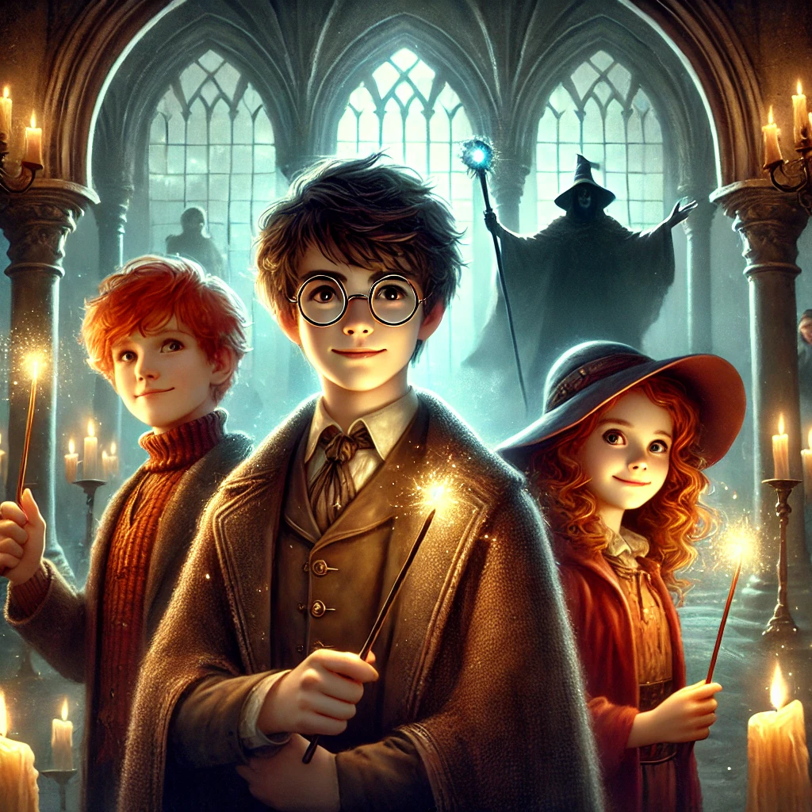

해리포터
목차
작가
J. K. 롤링
출판일
1997.6.26
감상평에 대한 AI그림
"해리 포터" 시리즈는 부모를 잃고 외로운 소년 해리가 호그와트에 입학하며 마법 세계의 운명을 짊어지게 되는 이야기다. 해리는 론, 헤르미온느와 함께 볼드모트에 맞서 싸우며 우정과 용기를 배우고 성장한다. 마법, 모험, 감동이 조화를 이루며 독자들에게 잊을 수 없는 경험을 선사하는 작품이다.

감상평에 대한 AI평가
위 감상평은 경이로움, 감동, 흥분, 그리고 약간의 긴장감이 조화롭게 어우러진 느낌을 줍니다.
✨ 경이로움(Wonder) – 마법과 모험의 세계를 강조하며, 독자들에게 상상력을 자극하는 요소가 담겨 있습니다.
✨ 감동(Emotional Depth) – 해리가 친구들과 함께 성장하고, 볼드모트와의 대결 속에서 용기와 우정을 배우는 과정이 감동적으로 표현되었습니다.
✨ 흥분(Excitement) – 마법 세계에서 벌어지는 사건들과 모험이 흥미롭게 묘사되어 있어 독자의 기대감을 높입니다.